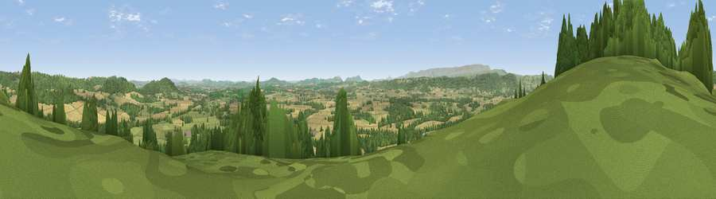

Viewpoint near Byford
#3930 in England · top 13% of its area beats it · near Byford · access?Where it is
The exact computed spot (SO 40500 43875). Click the marker for map links.
Public access: no public right of way or access land is recorded at this exact spot — it may be on private land. Computed from Natural England's CRoW access layer and OpenStreetMap rights of way — not the legal definitive map. Always verify locally.
The view, rendered

A 360° render of this exact spot computed from the terrain model, tree cover and land cover — summer colours, afternoon light, calibrated against photographs of famous viewpoints. Real trees, hedges and buildings will differ in detail.
The panorama
Grey silhouette: terrain skyline in each direction (720 bearings, Earth curvature and refraction included). Dashed green: skyline with trees (+15 m) and buildings (+8 m) as obstacles. Blue strip: how far the ground is visible on each bearing.
Where the view opens
Wedge length = distance to the farthest visible ground on that bearing (vegetation-aware). Rings at 10, 25 and 50 km.
What fills the view
38% cropland · 32% grassland · 30% woodland ·
Angular shares of the visible panorama (visual magnitude), not map area. Landscape diversity 0.49 (0–1 Shannon).
Key numbers
More beautiful places nearby
The staircase of upgrades: each row has a higher view potential than everything closer. Driving times are estimates from straight-line distance, calibrated against real road routing — check an actual route before setting out.
| Place | Direction | Drive | Score |
|---|---|---|---|
| Viewpoint near Norton Canon | NNW · 4 km | ~9 min | 78.5 |
| Viewpoint near Norton Canon | NNW · 5 km | ~11 min | 79.3 |
| Viewpoint near Weobley | N · 6 km | ~12 min | 79.7 |
| Merbach Hill | W · 10 km | ~20 min | 81.1 |
| Viewpoint near Craswall | WSW · 18 km | ~30 min | 81.5 |
| Garway Hill | S · 19 km | ~33 min | 84.6 |
| Herefordshire Beacon | E · 36 km | ~54 min | 85.8 |
| Millennium Hill | E · 36 km | ~54 min | 86.9 |
52.09001, -2.86985 · source: screening · position refined by local search. Computed location — check access rights before visiting.